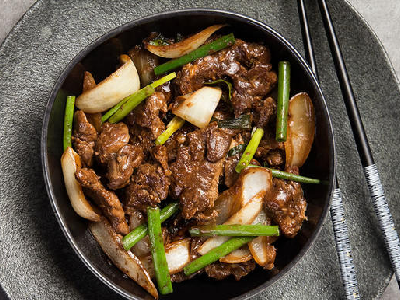

Bife Mongoliano
Marinado
225g de carne de porco fatiado
1 colher de chá de óleo
1 colher de chá de shoyu
1 e 1/2 colher de sopa de amido de milho
Modo de Preparo
Misturar os ingredientes e reservar por 1 hora. Reserve 1/2 colher de amido
Após isso, acrescente 1/2 colher de amido de milho.
Preparo da Carne
1/3 de copo de óleo de gergelim
Pimenta a gosto
2 cabeças de alho moído
1/4 copo de shoyu
1/4 copo de água
1/2 colher de chá de gengibre ralado
2 colheres de açúcar mascavo
1 colher de amido de milho (dissolvido em um pouco de água)
Cebolinha a gosto
Modo de Preparo
Aqueça o óleo e frite a carne. Reserve em um recipiente
Escorra o excesso de óleo e frite o gengibre por alguns segundos.
Acrescente o alho e refogue
Adicione o shoyo e a água
Acrescente o açucar e deixe ferver
Por último, acrescente o amido de milho
Misture a carne, finalize com cebolinha